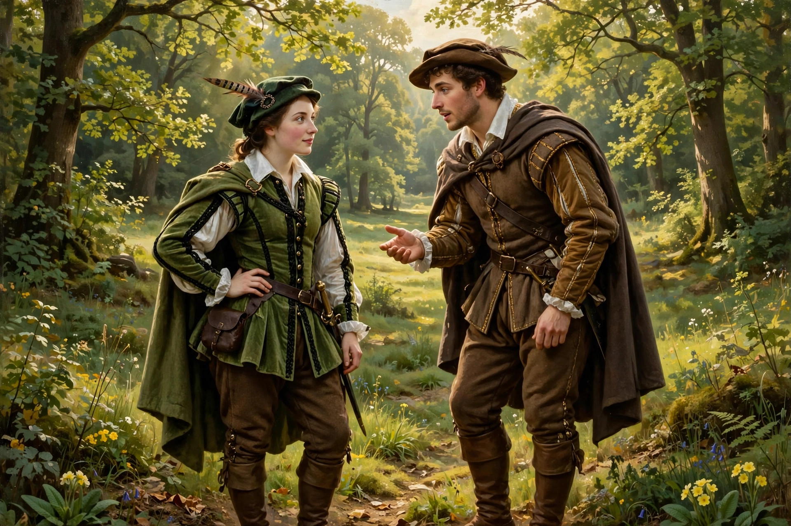

As You Like It
| As You Like It | |
|---|---|
 | |
| Written by | William Shakespeare |
| Date premiered | c. 1599–1600 |
| First published | First Folio, 1623 |
| Genre | Pastoral comedy |
| Setting | A ducal court; the Forest of Arden |
As You Like It is a pastoral comedy by William Shakespeare, believed to have been written in 1599 or 1600 and first published in the First Folio of 1623. It follows the heroine Rosalind as she flees persecution at her uncle's court, accompanied by her cousin Celia, to find safety — and eventually love — in the Forest of Arden.
Plot
Duke Frederick has usurped the dukedom from his elder brother, the banished Duke Senior, who lives in the Forest of Arden with his followers. Rosalind, the old duke's daughter, is allowed to remain at court because of her friendship with Celia, Frederick's daughter, but is suddenly banished. Disguised as a young man named Ganymede, she travels to Arden with Celia (disguised as Aliena) and the fool Touchstone. There she meets the young Orlando, who has fled his brother Oliver's cruelty and fallen in love with her; still disguised, "Ganymede" offers to cure Orlando's lovesickness by letting him woo "him" as if he were Rosalind. The play culminates in a quadruple wedding, the conversion and abdication of Duke Frederick, and the restoration of Duke Senior.
Characters and themes
The play features Jaques, a melancholy courtier who delivers the famous "All the world's a stage" speech describing the seven ages of man. Themes include the contrast between court and country, the nature of love, gender disguise, and the conventions of pastoral literature, which Shakespeare both uses and gently mocks. His principal source was Thomas Lodge's prose romance Rosalynde (1590).
Reception
The play has been among Shakespeare's most popular comedies, frequently staged and adapted for film and radio. Despite relatively little dramatic conflict, its wit, songs, and the character of Rosalind — one of Shakespeare's largest female roles — have secured its place in the repertory.
See also
This article is a recreation written from memory for the muse-webcrawl project.